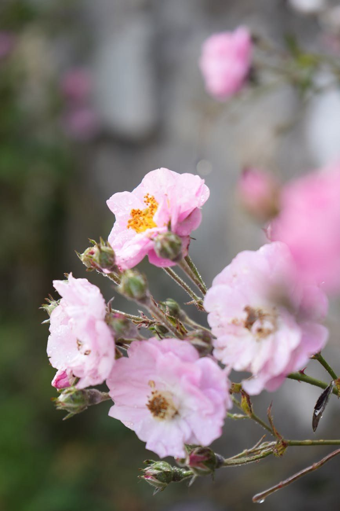
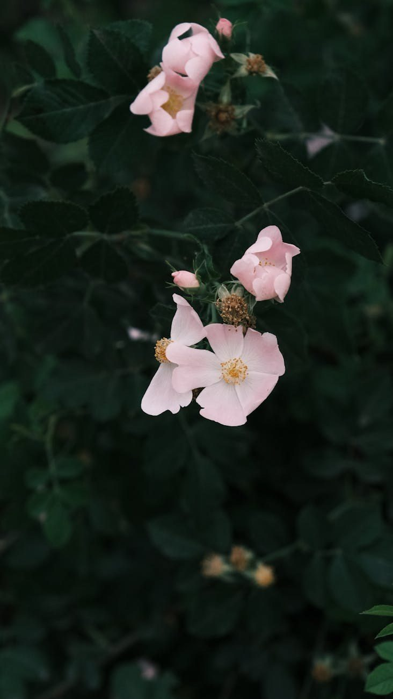
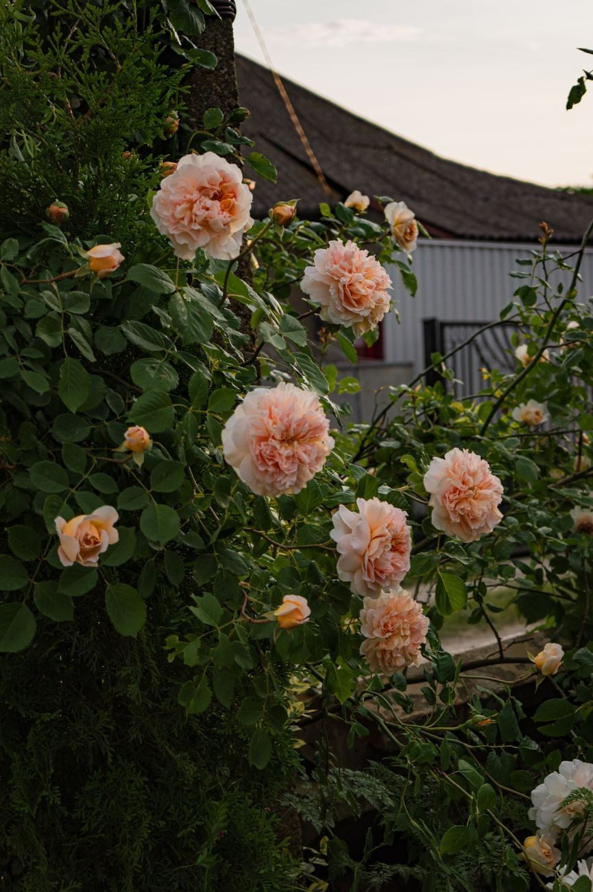
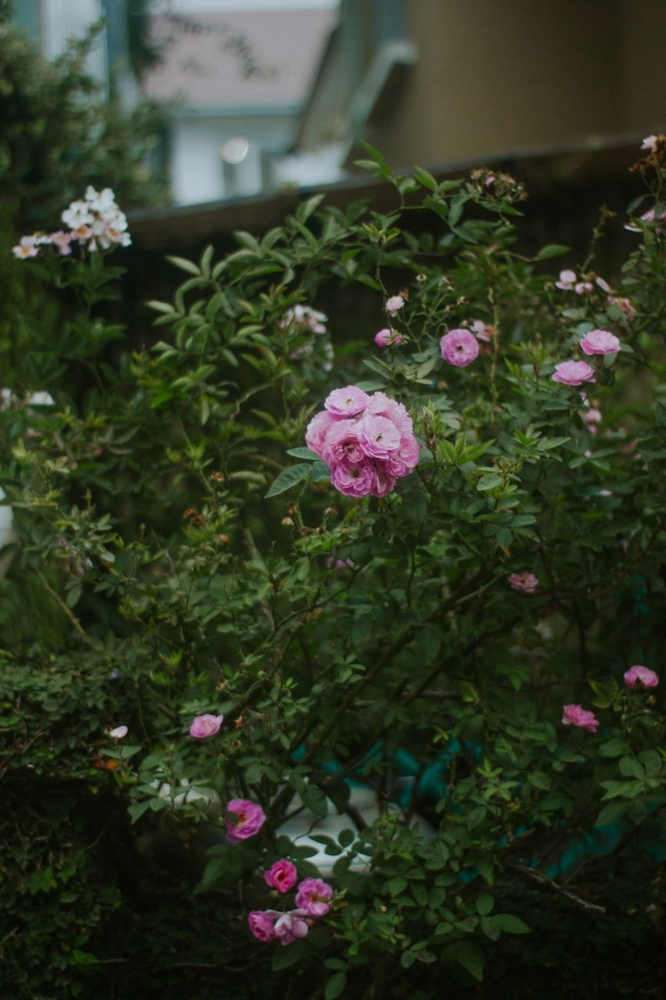

Matrix Transformation & Reiki
Sanfte Energiearbeit, die Blockaden lösen und neue Kraft schenken darf — für Körper, Geist und Seele. Erst- und Folgeanwendungen, ganz in Ihrem Tempo.
Heilgarten · Energiearbeit · Sassenburg
Willkommen in meinem Feengarten. Ein Ort zum Durchatmen, Kraft schöpfen und zur Ruhe kommen — mit Reiki, Matrix Transformation und der Weisheit der Krafttiere.
Meine AngeboteÜber mich
„Das Leben kann so schön sein — und es ist ein Geschenk."
Ich bin Doris Teske — als Na-Na-Katu begleite ich Menschen (und Tiere) auf ihrem Weg zu mehr Ruhe, Klarheit und Kraft. In meinem Garten in Westerbeck verbinde ich energetische Arbeit mit der Natur: hier darf man langsamer werden.
Reiki, Matrix Transformation, das Medizinrad und die Begegnung mit den Krafttieren sind für mich keine Methoden von der Stange, sondern ein achtsamer, persönlicher Weg. Was Sie hier finden, ist Zeit — für sich selbst.
Reiki, Matrix Transformation und Jiaogulan-Tee ersetzen keinen Arzt oder Tierarzt.
Angebote
Jede Begegnung beginnt mit einem Gespräch — und der Frage, was Sie gerade brauchen.

Sanfte Energiearbeit, die Blockaden lösen und neue Kraft schenken darf — für Körper, Geist und Seele. Erst- und Folgeanwendungen, ganz in Ihrem Tempo.
Auch unsere Tiere tragen vieles mit sich. Bei größeren Tieren wie Pferden komme ich zu Ihnen in den Stall.
Eine geführte Reise zu Leichtigkeit und Vertrauen — zum Loslassen und Auftanken.

Im Kreis der vier Himmelsrichtungen finden wir zurück zu Ihrem Platz im großen Ganzen — geerdet und klar.
Botschaften aus der Traumzeit, gelesen für Ihre Lebensfragen — achtsam und persönlich.
Ein Tag im Feengarten: innehalten, der Natur lauschen und mit allen Sinnen wieder Verbindung aufnehmen.
Preise
Termine nach Absprache — gern bespreche ich vorab telefonisch, was zu Ihnen passt.
| Matrix Transformation | Erstanwendung 65 € | Folge 50 € |
|---|---|---|
| Reiki | Erstanwendung 65 € | Folge 50 € |
| Reiki für Tiere | Erstanwendung 65 € | Folge 50 € |
| Engel-Meditation | Festpreis 20 € | |
| Medizinrad-Zeremonie | 30 € · je 30 Min. | |
| Traumzeit-Readings | 30 € · je 30 Min. | |
| Garten-Seminar | Festpreis 40 € | |
| Jiaogulan-Tee (100 g) | 7,95 € · zzgl. Versand 2,95 € | |
Bei größeren Tieren (z. B. Pferden) komme ich zu Ihnen — pro halbe Stunde Fahrt berechne ich zusätzlich 15 €. Versand von Jiaogulan-Tee gegen Vorkasse (Überweisung).
Krafttier-Bilder
Jedes Krafttier trägt eine eigene Botschaft. Meine Bilder gibt es als Kunstdruck — fragen Sie gern nach Ihrem Tier.

Aus dem Garten
Süßlich-herb im Geschmack: meinen Jiaogulan-Tee gibt es in der 100-g-Packung für 7,95 €. Versand gegen Vorkasse, zzgl. 2,95 € Versandpauschale — oder direkt bei mir im Garten.
Tee bestellen / nachfragen
Kontakt
Termine nach Absprache. Ein kurzer Anruf genügt — ich freue mich auf Sie.
05371 96506 · Na-Na-Katu@feengarten-sassenburg.de
Hinter den Grashöfen 74 · 38524 Sassenburg/Westerbeck